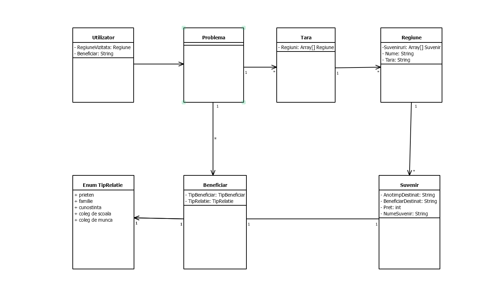

Software Requirements Specification
Revision History
Revision 1.0: Initial SRS documentation for SoRe
Introduction
1.1 Purpose
SoRe, short for Souvenir Recommender, is an innovative web application tailored for individuals embarking on multi-region or multi-country journeys. Its primary aim is to streamline the souvenir management process by offering personalized recommendations for each visited destination. Whether you've traversed the vast landscapes of Australia or explored the cultural depths of Romania, SoRe leverages cultural insights, local customs, and seasonal nuances to suggest the perfect memento.
1.2 Document Conventions
Follow the IEEE standard for software requirement specifications (SRS).
1.3 Intended Audience and Reading Suggestions
Target audience includes developers, project managers, designers, testers, and stakeholders. Start with an overview of the project scope, followed by detailed descriptions of product functions and requirements relevant to each stakeholder.
1.4 Product Scope
SoRe is a comprehensive web application designed to offer personalized souvenir recommendations based on travel destinations, local culture, customs, and individual preferences.
1.5 References
Refer to user interface style guides, vision and scope documents, and cultural databases for relevant information.
Overall Description
2.1 Product Perspective
The "Travel Souvenir Manager" is a standalone product, but it may interact with external databases or APIs for data retrieval and recommendation generation.
2.2 Product Functions
Enable users to log their travel experiences and manage souvenirs collected from each visited territory. Utilize machine learning algorithms to analyze travel data and provide personalized souvenir recommendations. Allow users to specify the purpose of the souvenir (e.g., family, friends, colleagues) to tailor recommendations accordingly.
2.3 User Classes and Characteristics
User classes include novice and experienced travelers seeking unique souvenir recommendations. Users can personalize recommendations based on the recipient's profile (e.g., family, friends, colleagues).
2.4 Operating Environment
Ensure compatibility with major web browsers (Chrome, Firefox, Safari) and operating systems (Windows, macOS, Linux).
2.5 Design and Implementation Constraints
Adhere to corporate data privacy policies and utilize secure communication protocols (HTTPS) for data transfer. We will not utilize modern web development frameworks (React, Angular) for frontend development and scalable cloud infrastructure for backend services.
2.6 User Documentation
Provide user-friendly guides and tutorials within the application interface to assist users in navigating features and functionalities.
2.7 Assumptions and Dependencies
Assume availability of cultural databases and APIs for recommendation generation. Dependencies on third-party services for data retrieval and recommendation algorithms.
External Interface Requirements
3.1 User Interfaces
Design an intuitive and responsive user interface with interactive elements for managing travel experiences and souvenir recommendations.
3.2 Hardware Interfaces
No specific hardware dependencies; compatible with standard computing devices (laptops, tablets, smartphones).
3.3 Software Interfaces
Interact with external APIs for retrieving cultural and travel data.
3.4 Communications Interfaces
Utilize HTTPS protocol for secure communication between client and server. Implement RESTful APIs for seamless integration with external services.
System Features
4.1 Souvenir Management
Users can log and organize souvenirs collected from each visited territory, including photos and descriptions. Provide a searchable database of souvenir items with details on their cultural significance and availability.
Other Nonfunctional Requirements
5.1 Performance Requirements
Ensure fast response times (< 2 seconds) for retrieving souvenir recommendations. Support concurrent user access without performance degradation.
5.2 Safety Requirements
Implement data encryption and access control mechanisms to protect user data from unauthorized access. Regularly perform security audits and vulnerability assessments to ensure compliance with industry standards.
5.3 Security Requirements
Employ strong authentication mechanisms (e.g., OAuth, JWT) to verify user identities. Encrypt sensitive user data both at rest and in transit to prevent data breaches.
5.4 Software Quality Attributes
Prioritize usability and user experience by conducting user testing and feedback sessions. Ensure scalability and reliability through automated testing and continuous integration practices.
5.5 Business Rules
Implement business logic to personalize souvenir recommendations based on user preferences and recipient profiles. Adhere to legal and regulatory requirements regarding data privacy and user consent.
Other Requirements
Legal requirements: The website is only local and it is a demo, will not be published, therefore no legal requirements must be met.
Reuse objectives: To be discussed.
Appendix
Appendix A: Glossary
This appendix contains a glossary of terms used in the document.
SoRe: Souvenir Recommender
SRS: Software Requirements Specification
OAuth: Open Authorization
JWT: JSON Web Token
Appendix B: Analysis Models
This appendix contains analysis models related to the product.
Appendix C: To Be Determined List
This appendix contains a list of items yet to be determined:
Reuse objectives